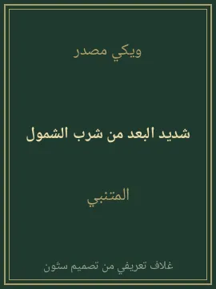

شديد البعد من شرب الشمول

قراءة تعريفية قصيرة كتبناها بأنفسنا بعد الاطلاع على الصفحة. لا ننقل نص العمل هنا، ولا نعرض غلافا لطبعة مطبوعة.
شديد البعد
تبدأ القصيدة كما في الصفحة: «شَديدُ البُعدِ من شرْبِ الشَّمولِ». القراءة هنا تعريفية بما ظهر لنا في الصفحة، وليست شرحا للقصيدة.
زاوية وحدود القراءة
قراءة تعريفية لنص مفتوح على ويكي مصدر، لا تغني عن قراءة العمل نفسه.
المصدر والترخيص
النص على ويكي مصدر العربية، ويعلن الموقع ترخيص محتواه بموجب رخصة المشاع الإبداعي نسب المصنف-الترخيص بالمثل 4.0 (CC BY-SA 4.0)، وأسماء المساهمين في صفحة تاريخ الصفحة. المؤلف متوفى ٩٦٥م بحسب ويكي بيانات. صفحة ويكي مصدر لا تذكر طبعة مطبوعة محددة لهذا النص، فلا ننسب إليه طبعة. راجعنا بنية الصفحة ومطلعها وخاتمتها، ولم نقارن كل بيت أو سطر بطبعة مطبوعة. لا ننسخ النص ولا نعيد نشره هنا، والرابط يفتح صفحته على ويكي مصدر، ولا يوجد ملف PDF لهذا العمل.
قراءة نص مفتوح - ويكي مصدر ↗ الصفحة الحالية على ويكي مصدر ↗ سجل المساهمين ↗